|
Field Interrogation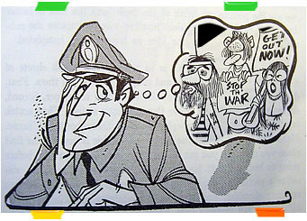For decades, the training of rookie police officers has been largely an accidental process. New recruits are paired with veteran patrolmen and then thrust suddenly into the public view. Taking someone into custody for the first time can be a thrilling experience, but what's the best way to proceed? The new patrolman is often amazed by the ability of his senior partner to pluck suspicious persons from a crowd and bring them down to the station with ease. Although a seasoned officer might attribute these skills to experience or intuition, there still exists an essential, immediate need to develop the rookie's field interrogation technique. Field interrogation, quite simply, is a conversation which takes place
in the area where you, the police officer, first encounter your proposed arrest
target. It can be right there on the street, in a public commercial plaza -
even an automobile! You - the patrolman - are authorized to detain any person whom you have
reasonable cause to suspect is committing, has committed, or is contemplating
committing a crime. You may demand his name, address, and occupation. 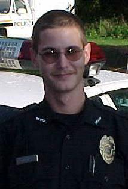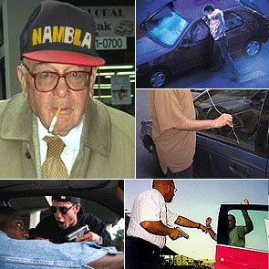As
a rookie, it becomes your responsibility to contort the actions, dress, and
location of any given person in such a way that he or she can be classified
as or a threat to community safety. Are you kids late for class? Looks to me like you're fleeing the scene of a crime! What's in the lunchbox? If you're a citizen walking down a city street, and you're observed glancing briefly at a parked car, be prepared to defend yourself against accusations of auto thievery. If you're a pregnant woman with an unsightly tummy bulge, be prepared to get strip searched for any concealed weapons. Persons wearing baggy, bulky, unsightly or off-seasonal clothing are subway taggers, skateboarders, and shoplifters. Those dressed in religious garb, jingling UNICEF cans from door to door are home invaders. And persons snoozing with apparent remorse in door frames, atop high places, near deep water or railroad crossings? They're contemplating suicide.
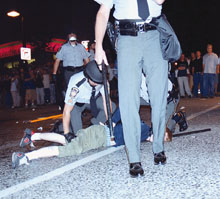Persons showing evidence of recent injury (or whose clothing is disheveled) may be perpetrators of an assault or gangbang. At the scene of a fire, any persons who show excess (or lack of) emotion, or those whose pants show traces of recent excitement or ejaculatory splork might be pyromaniacs. And it's widely known within the department that well over ninety-five percent of incarcerated subjects don't own a wristwatch. This phenomenon is explained by the fact that persons fitting the criminal archetype rarely care about the hour of the day. They're largely unemployed or otherwise unconcerned with a the concept fo maintaining a regular schedule. Some can't even tell you what day of the week it is! Can you imagine that? 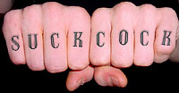Tattoos on your subject offer immediate, physical indications of previous crime habits and indicate future criminal intent. Juvenile and adult gang members alike tattoo themselves during incarceration, and a knowledge of this ritual (as well as the meaning of specific symbols or patterns encountered) will undoubtedly aid you as you pursue more and more arrests. Jailhouse tattoos may be distinguished from a professional tattoo in several ways. The professional tattoo will exhibit finer, more distinct, black outlines. The professional tattoo will have depth, style, clarity. The overall design will exhibit both exquisite form and believable proportion. The professional tattoo artist will usually never place a tattoo on the hands or face, nor will the professional indulge in lewd patterns, swear words, Nazi iconography, and the like.
Because inks are not obtainable in prison, inmates are limited by dyes or tints which can be improvised. Newspaper print from the Sunday funnies are often scraped and soaked in a communal toilet. This produces a liquid which can be dried later on to obtain crude ink. 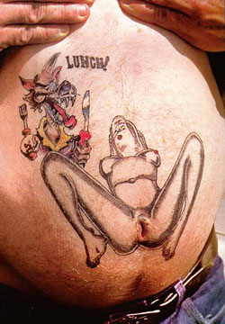An ordinary safety pin is the instrument most often used for tattooing in prison. These crude instruments produce readily distinguishable tattoos, but piss-poor inks always yield wide or diffused lines and blue-greenish discoloration. Certain patterns and locations for tattooing can indicate both a criminal
lifestyle and ongoing intent to defraud society. 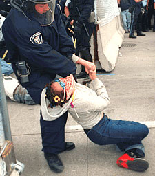Keep in mind, a subject's refusal to answer your questions about his tattoos, in and of itself, is one circumstance which allows you to arrest him for vagrancy. The Supreme Court has declared it's the duty of every citizen, when called
upon, to disclose all the personal information in his power to the police. And
fortunately, in states like Delaware, New Hampshire and Rhode Island, the length
of a field interrogation can last up to two hours.
For instance, an intoxicated person always warrants investigation. It should be remembered that a drunk usually loses any fear or apprehension of authority he may have had when sober, and for this reason believes himself invulnerable to threats and unimpressed with the officer's presence.
Like homosexuals, such persons can be most susceptible to flattery and sympathy - especially if an officer intimates that (a) the victims were clearly tempting the suspect, or (b) hints at the possibility of some kind of blowjob/confession 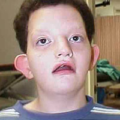exchange program. Down at the station, of course! Mentally
defective, feeble minded, senile, or psychotic persons are perfect subjects
for field interrogation. However, an officer must be sure to simplify his vocabulary
and use short questions as required by the subject's span of attention. The
use of questions must be avoided because they only produce erroneous
answers. Often a retarded person raised in a criminal environment will barely
understand popular vernacular. 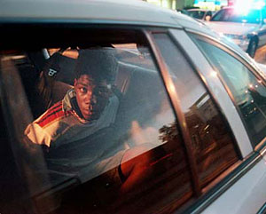The
questioning of ethnic minorities is a very sensitive subject, indeed
one which requires careful study, great patience, and practice, practice, practice.
A belligerent attitude must be avoided, and usually only a friendly or sympathetic
approach produces the desired results. The most successful method of interrogating
persons of color is for an officer to make the subject feel as if he or she
is being verbally beaten down like a suburban white kid who's only emulating
the subtle cultural nuances of a minority group. You should be prepared for a variety of reactions when you approach someone for interrogation. Occasionally, your target may exhibit an overly friendly, even child-like attitude, punctuating his conversation with an excess of "no sir" and "yes sir" replies in a desperate attempt to show respect and obtain your favor. Overly solicitous juveniles should be incarcerated with extreme prejudice. Further conversation may reveal that he uses the word "sir" in excess only because prior stretches in prison have trained him against the dangers of becoming someone else's property.
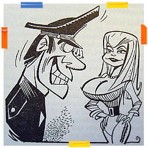An
officer should never attempt to conduct field interrogation on a female
subject when he's alone. As a general rule, women become far more angry
at being selected for interrogation than their male counterparts. In retaliation,
female subjects suspected of prostitution can claim you made improper advances,
or were abusive in some fashion. 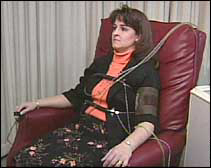And then there's lying. The truth is, everyone lies! A word-for-word repetition of an untruthful person's story indicates an overly-prepared alibi. Such a narrative unravels if you ask the subject to repeat it backwards. The most successful method of handling someone who lies is to point out all the obvious signs of his untruthfulness. Each physiological indication of lying should be mentioned directly: dry mouth, excessive perspiration, a change in facial color, continual swallowing, twitching lips, a noticeable pulse beat in the temples, or dark stains spreading slowly across the trousers. Call his immediate attention to cliched statements such as "I swear on my mother's grave," or, "you're standing on my neck." 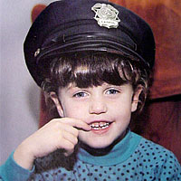A brand new cop in a brand new uniform may feel reluctant to place people under arrest, for fear of being called "eager" by older, less energetic officers. But the arrest artists who are most successful at field interrogation have trained themselves in the required techniques. The i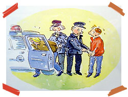ncreasing ability of an officer to conduct field interrogation depends on the extent to which he combines natural curiosity and experimentation with good old fashioned don't-give-a-shitsmanship. Yes, it can be difficult for a rookie to learn the art of arrest from his seasoned partner. Often the senior officer may not have mastered the techniques himself, or he may not possess the instructional ability required to relay the necessary information. Don't let a veteran office who's grown lazy over time dominate these interrogations, or prevent you from gaining experience.
Problems occur only when the senior officer does not - or cannot - explain why he singled out a certain subject for questioning. Experienced patrolmen might attribute selection of subjects to something as intangible as a "hunch," while others conceal their secrets in an attempt to mystify you. With new jails being built every month, now more than ever what's needed is a daily commitment to being your own officer. Our citizens demand airtight dedication to filling our woefully unpopulated prison cells and holding tanks, one criminal at a time. |
 "But
why?"
"But
why?"